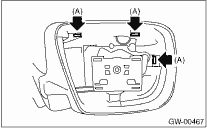
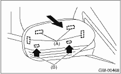
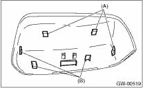

1. Remove the mirror. 
2. Press-in the upper side clips (A) from inside of outer mirror.

3. Pull the scalp cap frontward of outer mirror, remove the upper side clips (A) and lower side hooks (B), and then remove the scalp cap.

4. Insert the lower hooks (B) of scalp cap to the outer mirror and push the upper clips (A) in.

5. Install the scalp cap securely.
CAUTION:
Do not remove the scalp cap forcibly. The lower hooks may be damaged.